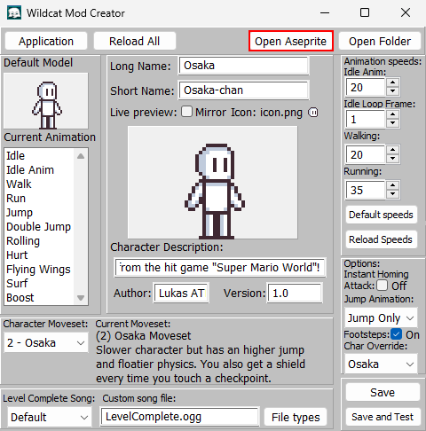
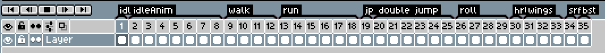
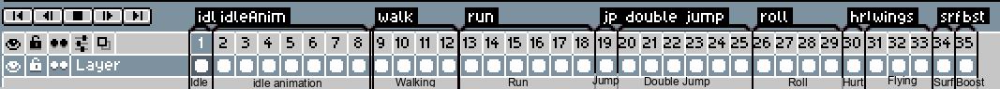
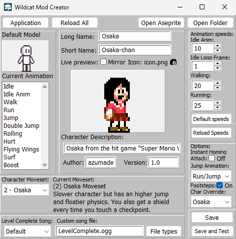

Previous (Mod Creator Screen Guide)
Making a mod
Contents
Start
Once you have learned how to create your mod and how the mod creator screen works, it's a good opportunity to start making your own mod.You can start by getting the basic stuff done, like the character's information, moveset, etc.

For this guide, I will be using azumadeline's custom Mario World-styled Osaka sprites;
Thanks a lot for her contribution!
Your mod's files
Your mod's files located in Tomo The Wildcat\Data\mods\Your Mod are the following:they are all pretty self explanatory, mod.ini is where the mod's info is stored.
"LevelComplete.png" is the Level Complete sprite for your character.
"icon.png" is your character's life icon.
"LevelComplete.ogg" is the song that will be played in the Level Complete screen.
The "sprites" folder is where your character's sprites are stored.
These are lots of files, I know, but the only one you have to care about is "character.ase", this is the file you'll open with Aseprite or Libresprite to get your character's sprites in-game.
Setting up Aseprite
(or Libresprite)
First you want to set-up for Aseprite or Libresprite folder, click on the "Open Aseprite" button at the top bar.If it's your first time using the mod creator tool (or if the program can't find your Aseprite/Libresprite folder) you'll get the following pop-up:
You just have to click "Accept" and look up for your program's .exe file on your computer.
For this guide, I'll be using Libresprite since it's free.
Once you have setup the program, you can click "Open Aseprite" again for it to work.
Editing Sprites
Hey, finally the fun part, huh?Now that we've got the character's info and Aseprite setup part done, we can click the "Open Aseprite" button once again to open our program.

Now a Window like this should open:
Be aware that this is not a guide on how to use Aseprite, so look up for stuff like that somewhere else, but shouldn't be too hard to learn for an amateur.
It may or not look different for you, depends on if you have used the program before or if there's any new updates, but all should function the same.
Let me guide you quickly on the important stuff;
- By default, you have 3 tabs at the top of the UI:
- These are pretty self-explanatory; "character.ase" is your character's sprites, "icon.png" is your character's life icon, and "LevelComplete.png" is your character's level complete sprite.
Click on each one to see and edit its contents.
- 
This is where our animation frames are stored, you can move around by clicking them or pressing the arrow keys.
- Each animation from the game here is divided by groups, for easier editing.
- 
- Some names aren't as clear as others due to limitations on the program's font size.
Now you can go and experiment with the sprites.
PSA: Do not add or delete animation frames for ANY animation, as that will mess up with the animation frames' indexes for custom characters internally, keep the whole file at 35 frames.
in my case, I will use sprites from the previously mentioned Mario World styled Osaka sprite-sheet by azumadeline.
Remember to save each file with CTRL + S!
Exporting sprites
Once you have finished editing your character's sprites, it's time to export all animation frames into different numbered .png files.So go to File > Export on Aseprite and click on it (or press Ctrl+Alt+Shift+S)
This window will pop-up, make sure to set File name as character.png, File type to png files and Resize to 100%.
Once you have done all of that, click "Ok"
After that, you will probably get a few other pop-ups like these:

Just accept them all and everything should be done!
Now you can go back to the Mod Creator program and click the "Reload All" button.
And it's all done now!

Saving and testing
Once you have made progress, remember to save your mod with the "Save" buttonOr, you can press click the "Save and Test" button, which will save your progress and open a new window where you'll be able to test your character in-game.